System Overview
Zenoir Online Classroom is an E-learning system which is mainly targeted towards teachers and students to implement online learning. The importance of these kinds of software is that it encourages the participation of students in the classroom this is implemented in the sessions module of the system which emulates classroom discussions in the real world.
The system is composed of two modules, the administrator module and the classroom module. The administrator module is mainly used for managing user accounts, courses, subjects and classrooms. The classroom module is mainly used by the teachers and students for their online interactions such as participating in online discussions, submitting assignments, downloading handouts, and sending messages to other users in the classroom.
Tech Stack
Here are the set of technologies and tools that I have used in the development of this system:
· CodeIgniter
· jQuery
· jQuery UI
· DataTables
· HTML KickStart
· jScrollPane
· Node.js
· Now.js
· Socket.io
· Git
Installation
Zenoir Online Classroom was developed in a Windows environment so I would prefer that you install it a computer with a Windows Operating System installed. But this can also be installed in a Linux Operating System.
The following are the requirements when you’re installing Zenoir on Windows.
· Wampserver 2.1 - http://www.wampserver.com/en/
o MySQL v5.5.8
o PHP v5.3.5
o Apache 2.2.17
· Node.js - http://nodejs.org/#download – select the Windows installer
· Heidi SQL - http://www.heidisql.com/
Installing Wampserver
1. Double click on the wampserver installer. Once you see the screen below click on next.
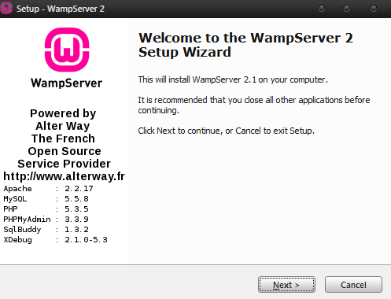2. Select I accept the agreement then click next
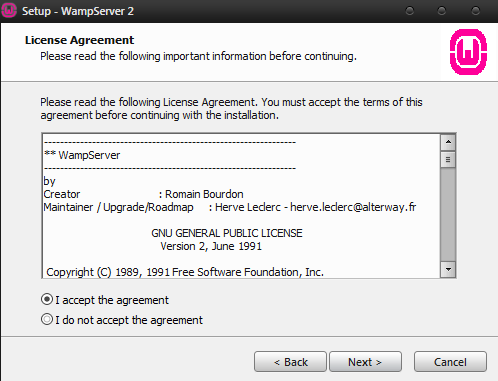3. Type the following on the location bar:
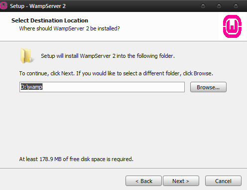4. Click next until you see this screen. Then click on install to install the wampserver.
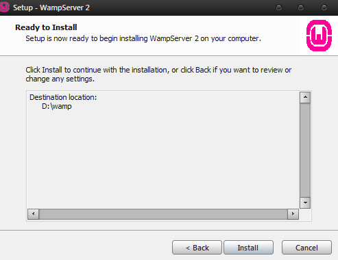
Installing HeidiSQL
HeidiSQL is a free database management application were going to use it to import the database used by the system into the MySQL database server.
1. Double-click on the HeidiSQL installer. Once you see the screen below click on next.

2. Accept the license agreement and click on next.
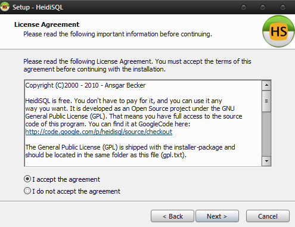3. You can make use of the default folder for the installation of programs or browse for a different installation path.
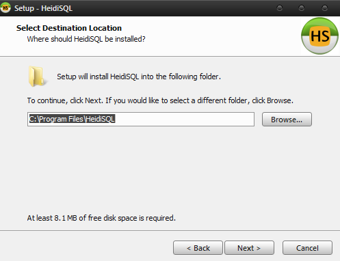4. Click Next until you get to the following screen and then click install.
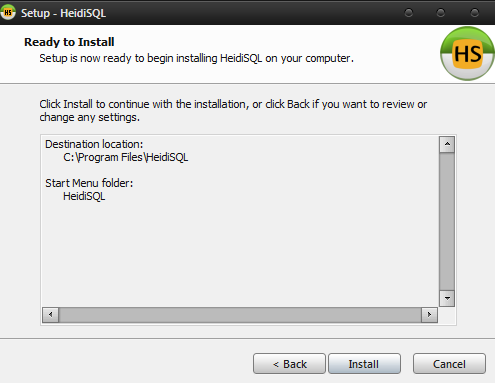Installing Node.js
Node.js in short terms is JavaScript that runs on the server-side. It’s basically responsible for running the back-end of the sessions module.
1. Double-click on the node.js installer
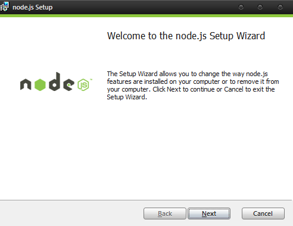2. Select install (I have already installed node.js before I created this walkthrough so what you can see in the screenshot is the change button) and click next.
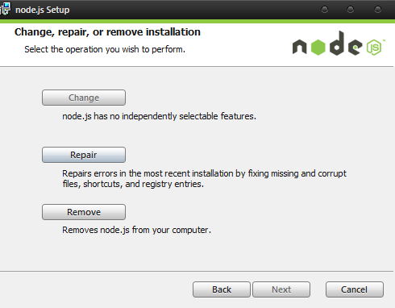3. Click next until you see the screen below then click on Finish.
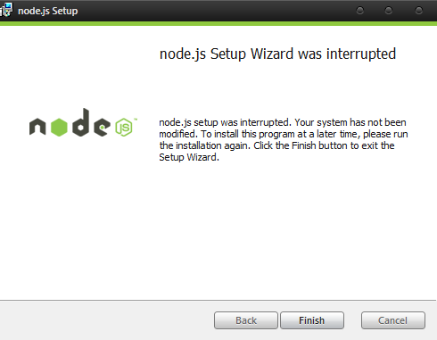
Importing the Database
The database is auto-filled with default data such as the administrator account and module information do not empty the contents of the tables because the default data is used by the system.
1. Open up HeidiSQL. The following screenshot shows the default values you can go ahead and click Open if you have the same screen as mine.
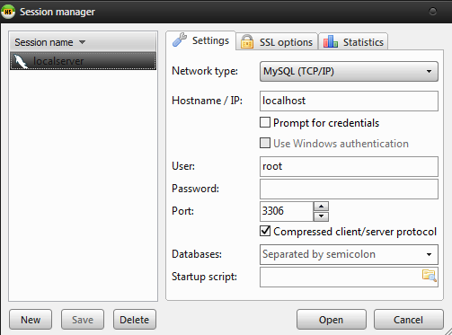2. Right-click on the localserver, select create new then click on database. This opens up a new window for creating a new database just leave the default values as it is, what’s important is that you name the database as zenoir.
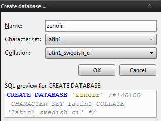3. You now have the database for the Zenoir Online Classroom, click on it to select it
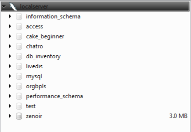4. Next you have to import the tables and default data on the zenoir database. To do that just open up the zenoir.sql file which is stored in the assets folder and copy all of its contents then paste it to the query tab.
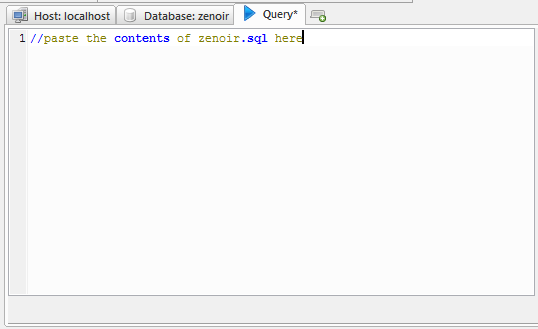5. After that just press F9 on your keyboard to execute the query.
Installing Zenoir
To install something you have to download it first, the Zenoir Online Classroom can be downloaded from its Github page:
https://github.com/anchetaWern/Zenoir-Online-Classroom
After downloading extract the files to the following location:

The directory will look like this on a Windows computer:
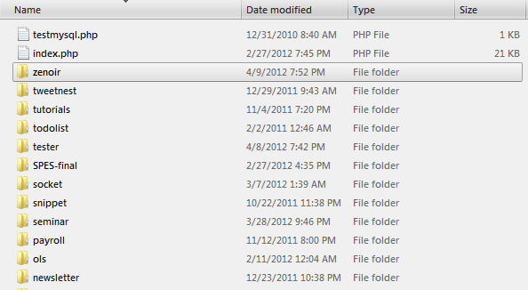The system is now installed on the computer but you still have to configure a few things before we can be sure that it will work perfectly at all times. I’ll be showing that to you on the next chapter.
Configuration
You have already installed the system but you still have to configure a few things in order to ensure security.
PHP.ini
This is the file where all the configuration for php is stored you need to change a few things on it to make sure that that the system is running on perfect environment.

All of these are on Megabytes Unit just change it to whatever limit you want for the file upload size.
· post_max_size = 50M
· upload_max_filesize = 20M
· session.auto_start = 1
My.ini
 The MySQL database also has a limit
when it comes to the size of files that you store on it, I’ve set mine to 2048
Mb but you can have a lower or higher value it all depends on your preference.
The MySQL database also has a limit
when it comes to the size of files that you store on it, I’ve set mine to 2048
Mb but you can have a lower or higher value it all depends on your preference.
· max_allowed_packet = 2048M
Node Server
You also need to configure the node.js server so that the sessions module will work properly. The sessions module relies on node.js, socket.io and now.js to ensure real-time communication between the computers used by the students and the teachers whenever they are in a session.
 Access the following location on the file
system of the server:
Access the following location on the file
system of the server:
 Open up the nowjs.js file and replace localhost with
the external ip of the server (ip address which is accessible outside the
network). You can determine the external ip by visiting cmyip.com or
whatismyip.com. It will look like the example below once it’s edited:
Open up the nowjs.js file and replace localhost with
the external ip of the server (ip address which is accessible outside the
network). You can determine the external ip by visiting cmyip.com or
whatismyip.com. It will look like the example below once it’s edited:
I have set the port to be 8081 by default if you want to configure it you must open up the multiroom_server.js then change the port to whatever port you want to use, but be sure that the port that you are going to change it to is not already taken by other applications and services.

 If you haven’t already guess you also need to change the port
from the nowjs.js file to be equal to the one that you used in the
multiroom_server.js file:
If you haven’t already guess you also need to change the port
from the nowjs.js file to be equal to the one that you used in the
multiroom_server.js file:
Database Password
I have set the default mysql password as 1234. I suggest that you change the password since it’s insecure and easy to guess. To change the password you left-click on the Wampserver tray icon then select MySQL then click on MySQL console, this brings up the console that you can use to manipulate the database. By default there is no password so just press enter when you’re prompted for the password. Then type the following commands in order:

You just need to replace the desired_password with the password that you want.
 After that you need to modify the
MySQL password in a few places in the system. First is the multiroom_server.js
file:
After that you need to modify the
MySQL password in a few places in the system. First is the multiroom_server.js
file:
You also need to change a few things on the database.php file which can be found in the following location:

Just replace the desired_password with the password that you set earlier on the MySQL console

Running the System
Wampserver
To run the system all you have to do is to start Wampserver to do that just press the Window button on your keyboard and search for start wampserver then click on the result.
Node Server
 You also need to run the node server
which is primarily used for the sessions module. To do that just access the
following location:
You also need to run the node server
which is primarily used for the sessions module. To do that just access the
following location:
 And then press shift on your keyboard while you right click on your
mouse. This will show additional items on the context menu. Just choose the
open command window here option. And then enter this command:
And then press shift on your keyboard while you right click on your
mouse. This will show additional items on the context menu. Just choose the
open command window here option. And then enter this command:
It will look like this:
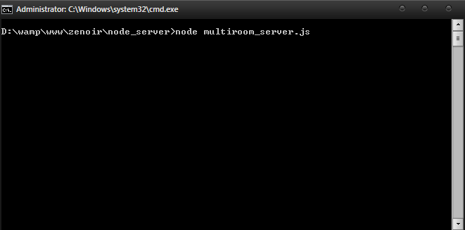Remember not to close the command line because it’s running the node.js server which ensures real-time communication between the computers in a session. Closing this would actually render the session module useless.
Administrator Module
In this section I’ll walk you through the administrator module. The administrator module is mainly used for managing user accounts, courses, subjects and classrooms. New user accounts, subjects, courses and classes can only be created in this module. This is also where the system administrator can enable or disable existing classrooms.
Below is a screenshot of the administrator module. Buttons which links to users, subjects, classes and courses are all accessible from the administrator’s home page.
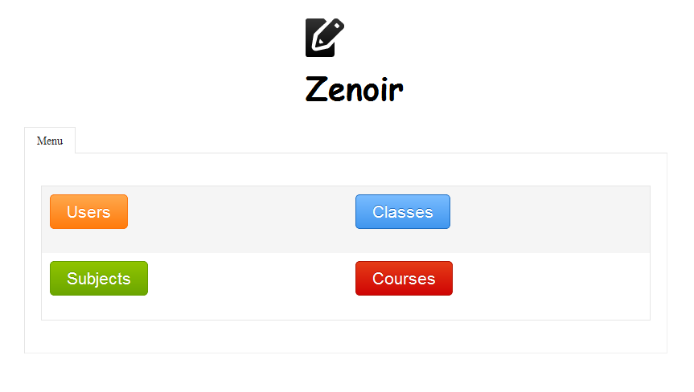Let’s first head on to the users. This is where you will find a list of all the people in all the different classrooms.
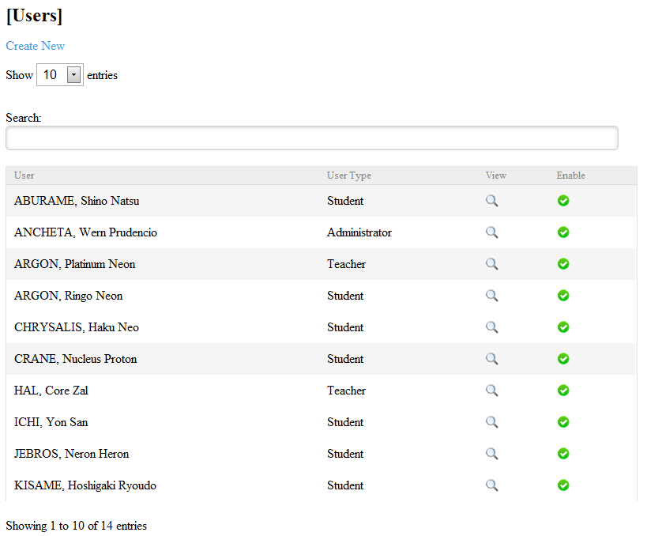Clicking on the view icon will let you view the activity log for the user that you have selected. Only the activities performed by the students and teachers are being logged by the system so viewing another administrator’s log will show nothing.
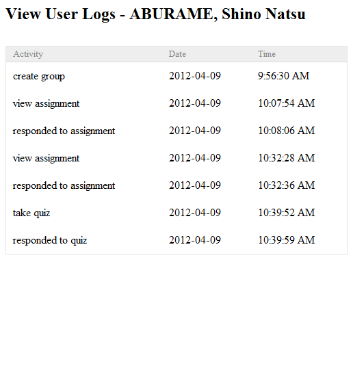
New users can also be created. An administrator can create a student, teacher, or another administrator. The password for the user is not included since the user id and the password is the same by default the user has to change it on first login.
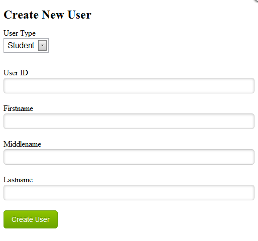
Subjects
This is where you can create and manage subjects. Subjects are just like what they are in the real world; some examples would be Math, Science, Biology, etc. These are the actual subjects being taught by teachers. This will later on be associated with a class that will be created.
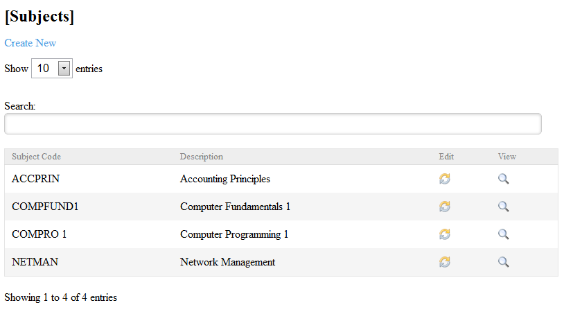New subjects can be created by clicking on the Create New link.
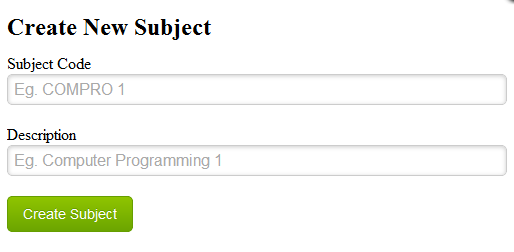
Courses
This is where you can create and manage courses. This is a college student specific feature but it is required. If you’re using this software for elementary or high school students you can have a course description like Elementary Students or High School Students.
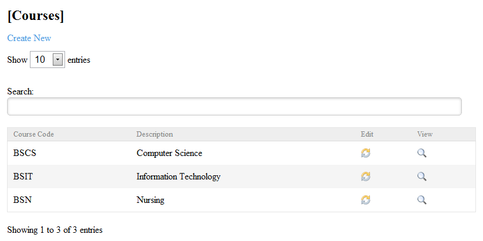Creating new courses is as easy as creating new subjects.
Classes
Classes are the actual classes that are being attended by each teacher and student in a real world setting. Teacher A can have a class on biology with the 1st year college BSIT Students, but can also have another class on biology with the 1st year college BSN Students those two are both classes in biology but they’re with a different set of people so each of those are considered two different classes.
I guess the example was good enough so let’s go back to the system. You can see here the list of existing classrooms. Information such as the class code description, subject and teacher is indicated. You can actually type any search term on the search box, for example if you only want to see classes in Accounting you just need to type Accounting and all the classes in accounting will be listed on the table. Clicking the view icon will allow you to enter the specific classroom but it’s strictly for viewing purposes only, you as the administrator can only view things inside the classroom. Participating in classroom activities is possible but is not encouraged since the administrator’s role does not cover it.
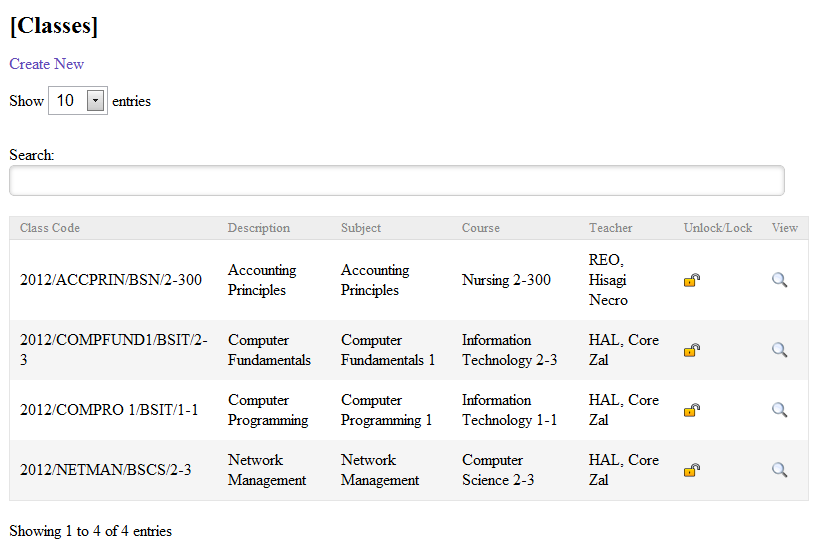Creating a new class requires subject, teacher, and course information. You actually need to create entries for the subject, teacher and course before creating a new class. The class code is a unique representation of a class. There is a naming convention for class codes which composed of the subject code + slash separator + course code + year. If there are multiple sections in a course then you can also include the specific section to make the class code unique. The start and lock dates is the range of dates when the class will be accessible by both teachers and students. After the lock date the classroom will automatically be disabled, but the teacher can later on request the administrator to enable the classroom so that the students can still continually access it even if the formal class is already over.
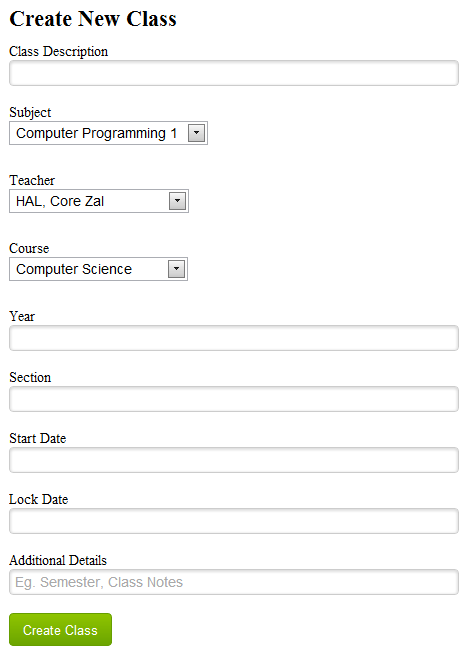The classroom module is the main meat of the system. This is where the teacher and students can interact with each other in an online environment. Below is a screenshot taken from a student account. Information such as the class code, class description, teacher and additional classroom details can be seen on every page that is under this module.
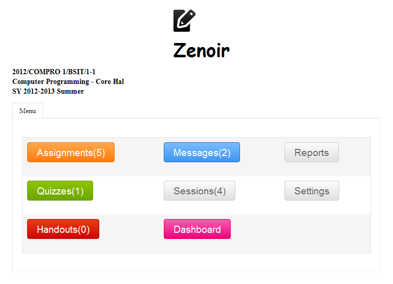
Dashboard
When you first log in the first thing that you will see is the dashboard or the landing page. This is where you will see a list of class that you can currently access, invites to a particular classroom, unread posts from all the classrooms that you are part of, and the previous classes that you have attended to. The dashboard is where you can find all the information relevant to your account.
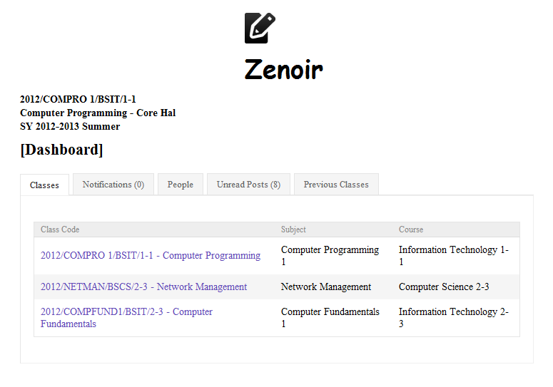
Assignments
This is where you as the teacher can create new assignments for the students to submit later. In creating new assignments the teacher can also attach files that is related to that particular assignment. The students can submit the assignment as long as the date in the server is less than or equal to the current date.
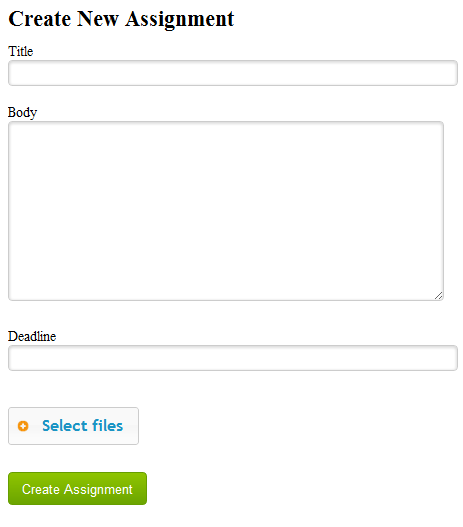You can also view the responses to a particular assignment by clicking on the view response button.
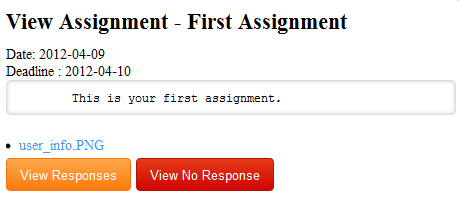
Clicking the View Response button will show a list of the names of the students and the corresponding date and time in which the reply was submitted. The red star indicates that the reply hasn’t been read by the teacher yet.
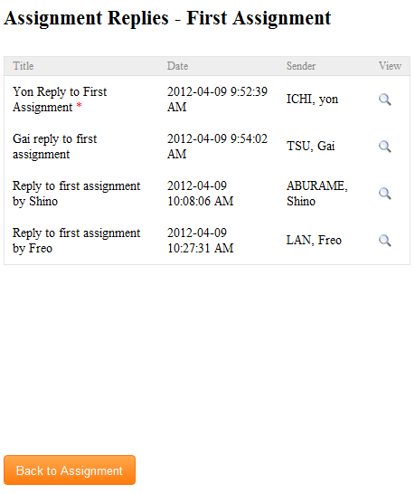Clicking the view icon will show the details of the response.
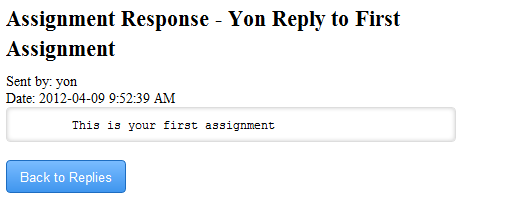Existing assignments are all listed.
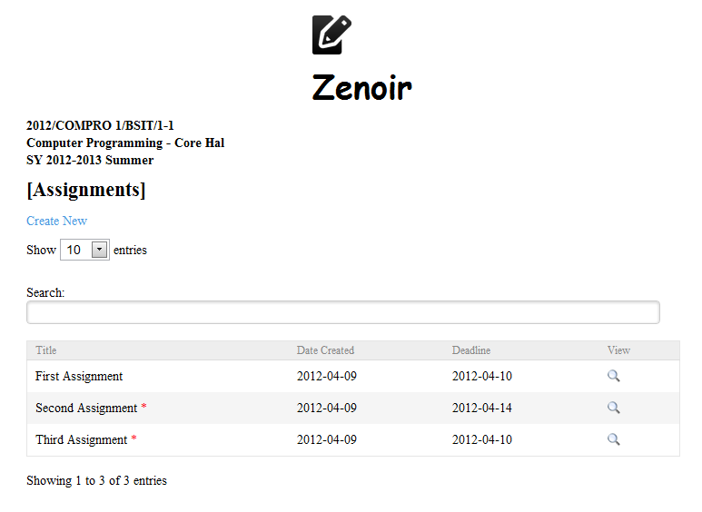
On the part of the students they can reply to an assignment by clicking on the view icon this will allow the students to view the assignment. They can just click on the reply button to reply on the assignment. Note that they can only do this if the assignment has not met its deadline yet.
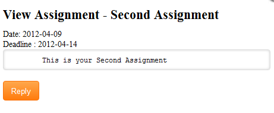Clicking on the reply button will display a form in which the students can place their reply. The body is automatically filled with the assignment body so that the students won’t need to open up another window or application in which they can view the contents of the assignment. They can just delete it later on once they have written the reply. Files can also be attached to a reply. Note that the students can only submit one reply for an assignment. Replies cannot be updated by the students so it’s important that they are sure of their answers before submitting.
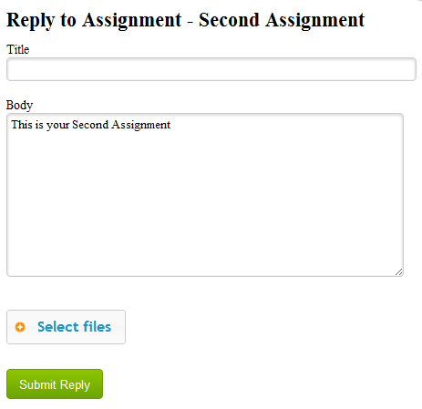Messages
This is where the students and teachers can interact inside the classroom in a private manner. This is very useful in cases wherein the student has problems which he cannot open to the whole class. The messages can also be used on things that aren’t classroom related that is why the activities here aren’t logged in the database.
Creating a new message involves selecting the people who will receive the message, the title and body and also the files if there is any. Only people who also belongs to the classroom that you are currently logged in are listed in the select box.
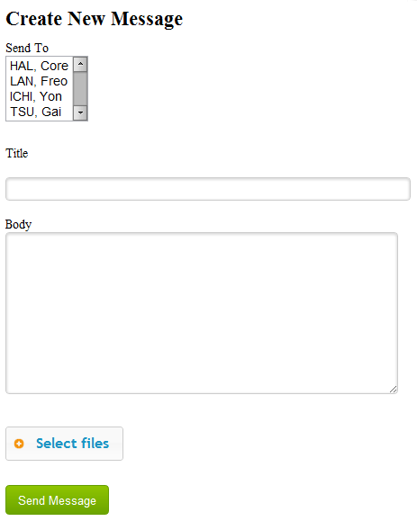The list of messages are divided into two categories, the inbox where the messages sent to you are listed and the outbox where the messages that you have sent out to other people are listed. You can view any message by clicking on the view icon.
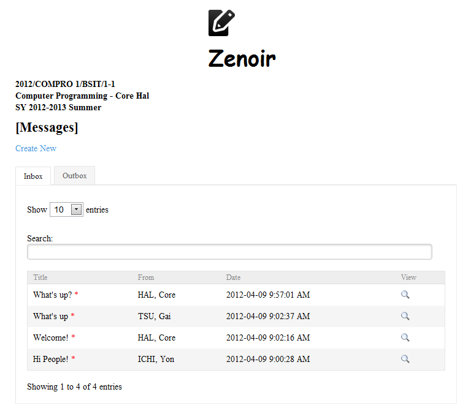
Reports
The reports is where you can view student-related information such as the autobiography and user activity log.
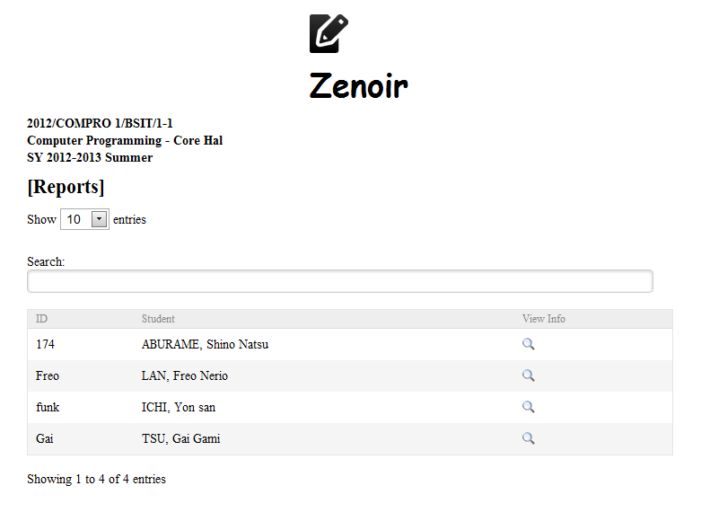Clicking on the view icon opens up a new model window that allows you to view the students autobiography.
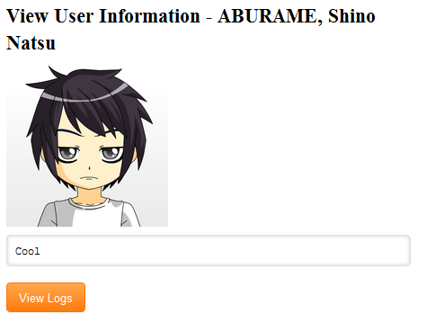Clicking the View Logs button shows a list of all the activities performed by the student in the classroom along with the date and time when it was performed. This is very useful if the teacher wants to track what the student is actually doing inside the classroom.
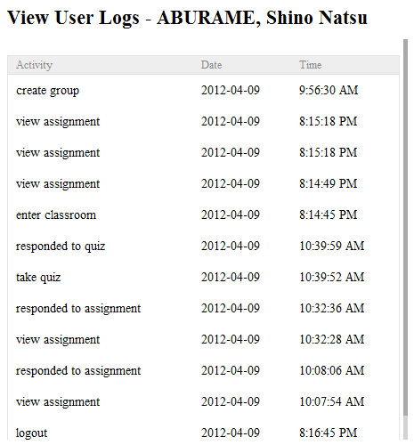Quizzes
This is where you can create new quizzes. Quizzes are only multiple choice type at this time but I’m planning to add other types of quizzes in the future versions of this system.
Quizzes has a start and end time, this is the range of time upon which the student can take the quiz. Accessing the quiz before or after the allotted time isn’t allowed by the system. Quizzes should also be taken by the students after opening because it can only be opened once.
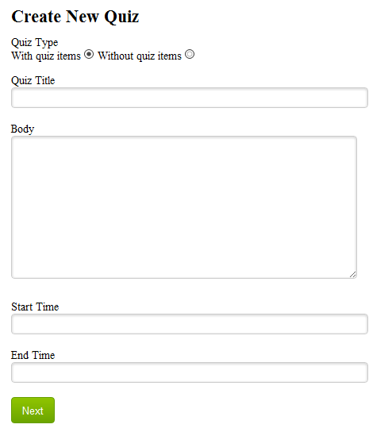After entering the general details of the quiz, the quiz items is then set. First you have to enter the number of items in the quiz and then input the question, the four choices and lastly the answer to the question.
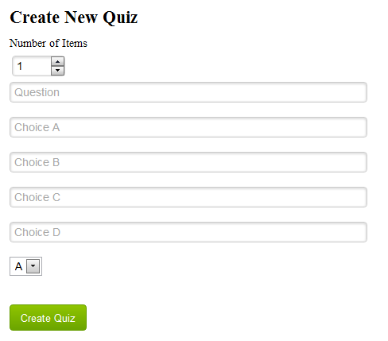Clicking on the Create Quiz button will create the quiz. It will immediately be listed in the table of existing quizzes.
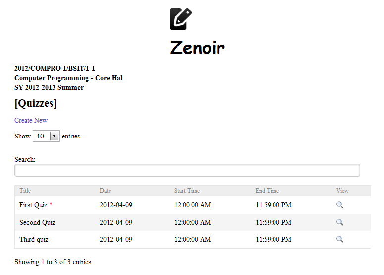
Clicking on the view icon shows all the details pertaining to the quiz. And that includes the quiz items.
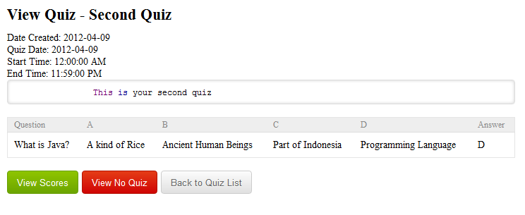Clicking the View Scores will allow you to view the scores made by each student.
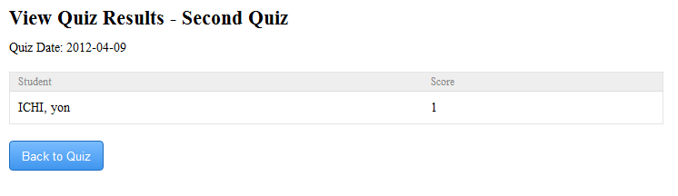
On the part of the students taking the quiz created by the teacher only requires two steps. First the student needs to click on the quiz that he needs to take.
And then answer the questions in the quiz:
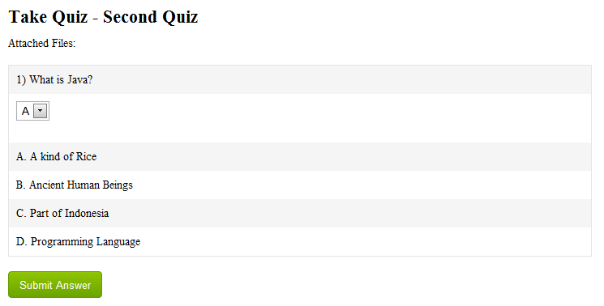After clicking on the Submit Answers button the students will also be prompted if they are sure of their answers, they can just click on the cancel button and review their answers if they’re not sure otherwise they click on Ok to submit their answers.
Once the answer has been submitted the page will be redirected to the list of quizzes. They can see the link to the quiz that they have taken but they can no longer enter it. The answers and scores to a quiz can also not be viewed by the students.
Handouts
The handouts is where you can post useful resources, links, documents related to the class.
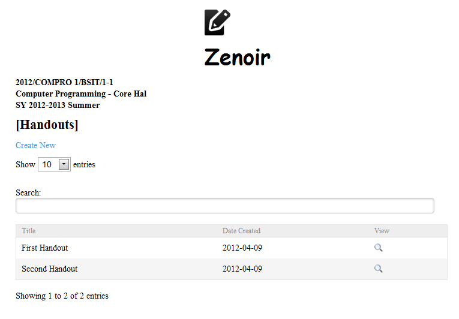Creating a new handout is simple, you just have to input the title, body and upload some files.
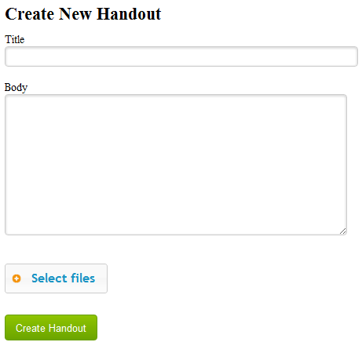
Groups
Groups is a feature of this system that will allow the students and the teachers to create a group composed of any number of people as long as they belong to the same class. Groups can be accessed on the top left portion by clicking on the groups link.
Creating a
new group involves giving a name to the group and selecting the members. The
only people listed in the select box are the people who belong to the classroom
where the user is currently logged in. After selecting the members just click
on the create group button to create the group. Remember that only the
person who created the group can make changes to it later. Like removing people
and adding people to the group.
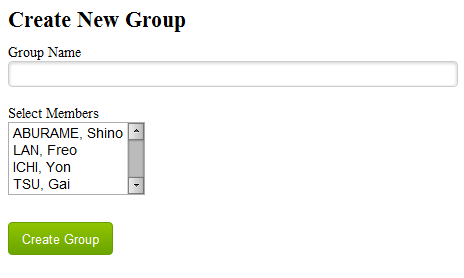
To update a group just select it from the list of groups where you currently belong and click on the update icon.
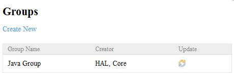Clicking that will show an interface similar to the one below. It allows you to update the name of the group, remove existing members and add new members. To remove a specific member just click on the delete icon. To add a member just select the users that you want to add while pressing ctrl on the keyboard to select multiple users. Then click on the update group button once you’re done making the changes.
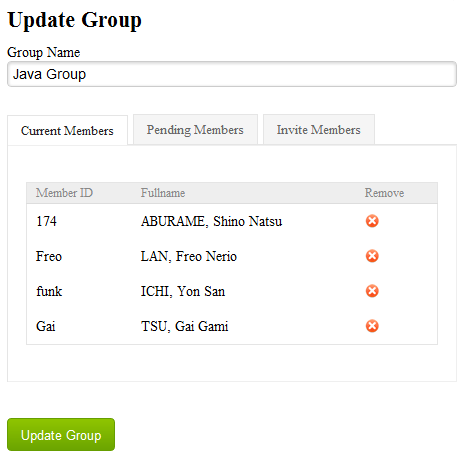The groups only purpose is for grouping people for team sessions. It’s actually necessary to create a group first before thinking of creating a team session.
Sessions
This is the main meat of the classroom module. This is where the teachers and students can interact with each other in real-time. This is merely an emulation of the discussions made in a classroom in the real-world but it encourages participation from each of the students. This will mainly benefit the shy-type students who aren’t participating in classroom discussions mainly because they’re afraid of raising their hands and are too nervous to answer questions personally.
There are 3 types of sessions:
· Class Session – can only be created by teacher and all members of the class are automatically members of a class session.
· Masked Session – the same with the class session the only difference is that the members have the option to use an alias upon joining the session. This is very useful in cases wherein the topic for the session requires opinions and ideas which aren’t very pleasant when the opinion or idea is associated to a real person’s name.
·
Team Session –
members of this session can be selected by the creator of the session.
Creating a new session requires the title, description, accessibility status, and the range of time upon which the session is accessible. If the always accessible checkbox is checked the session will always be accessible, members of the session can post anything anytime because the session never expires members can continuously pour some ideas and opinions. If the always accessible checkbox is not checked then you have to input the time from which the session is accessible and also the time in which it will expire. Expired sessions can still be seen on the list but cannot be entered by anyone anymore.
When you are late in entering a session you will not be able to see previous messages that were sent before you joined in the main chat box but you can view it by clicking on the session title which opens up a new modal window which lists all the conversations before you joined the session.
When you enter a session here is what it looks like. The session details are on the upper part just below the classroom details.
Clicking on the session title will list all the previous conversations before you joined the session.
Settings
This is where you can control the settings in the classroom. You can invite existing students from other classrooms, remove existing students from your class, enable or disable specific modules, and export classroom data to other classes that you also handle.
First on the list is inviting students from other classes. This lists all of the students that are not currently part of the classroom where you are currently logged in.
Clicking on the add icon will prompt you if you want to invite the student into the class.
Clicking OK does not automatically add the student into the classroom the student has to confirm the invitation first before he can be a member of the class.
Next is the removing of students in the classroom. This is where you can remove students who are currently a member of the class where you are currently logged in. This doesn’t require the confirmation of the student. After the teacher has confirmed the action of removing the student from the classroom the student is automatically removed from the classroom. The removed student can still log in to his other classes but not in the classroom where he is removed.
Next is the enabling and disabling specific modules in the classroom. All you need to do here is to check the modules that you want to enable and uncheck the modules that you want to disable. All the modules are enabled by default. Once disabled the students and you as the teacher will not be able to access the module. This is useful in cases wherein you have to limit what the students can do inside the classroom.
Lastly there is the classroom export feature. This is where you can take the data from the classroom where you are currently logged in and transfer it into the other classes that you handle. All you have to do here is to check what you want to export (students, handouts or both) and then select the classroom where you want to export it and then click on the export button.
Additional Features
Here I will discuss some of the features
that were not included on the version before I created this manual. This is the
part that will be constantly updated as I add more features to this system.
Email Notification
This is a feature of the system wherein
it sends out emails to the concerned users when specific events happen on the
system. Here’s a list of the events covered by the email notification:
·
Create Assignment – this event is triggered whenever the teacher
creates a new assignment.
·
Send Message
– this event is triggered whenever a user (either a teacher or a student sends out
a message).
·
Create Quiz
- this event is triggered whenever the teacher creates a new quiz.
·
Create Handout - this event is triggered whenever the teacher
creates a new handout.
·
Create Session - this event is triggered whenever a session (either
masked, team, or class) is created by a user. For team session, only the members
of the group selected by the initiator will receive the email notification. For
class and masked session, all the members of the class will receive the email.
·
Respond to Assignment - this event is triggered whenever a student responds
to an assignment.
·
Respond to Quiz - this event is triggered whenever a student responds
to a quiz.
·
Invite to Classroom - this event is triggered whenever a student is
invited by a teacher. Only the student invited by the teacher receives the email
notification.
·
Remove from Classroom - this event is triggered whenever a student is
removed by the teacher from the classroom. Only the student removed by the teacher
receives the email notification.
·
Reply to Message - this event is triggered whenever a user replies
to a message sent out by another user.
·
Group Invite
- this event is triggered whenever a group leader (can be a student or a teacher)
creates a new group. All the invited users receive the email notification.
·
Group Removal - this event is triggered whenever a group member
is removed from the group. Only the removed user receives the email notification.
Email notifications are all enabled by
default for each event. You can disable it by going to the Email Notifications tab in the Classroom
Settings and uncheck all the events that you want to disable.
Contact Information
If you have any questions, comments or suggestions regarding this system you can try and reach me on the following places:
· Project Github page - https://github.com/anchetaWern/Zenoir-Online-Classroom
· Twitter Account - https://twitter.com/#!/Wern_Ancheta
· Gmail Account – ancheta.wern@gmail.com
· Facebook Account - https://www.facebook.com/vern.ancheta
· Google Plus Account - http://bit.ly/HmNUHe